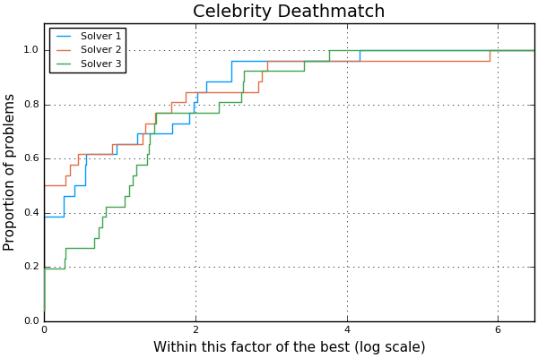

BenchmarkProfiles.jl documentation
A simple package to plot performance and data profiles.
This package containts Julia translations of original scripts by Elizabeth Dolan, Jorge Moré and Stefan Wild. See http://www.mcs.anl.gov/~wild/dfo/benchmarking.
The original code was not accompanied by an open-source license. Jorge Moré and Stefan Wild have kindly provided their consent in writing to allow distribution of this Julia translation. See here for a full transcription.
Watch out for the pitfalls of profiles!
How to Install
pkg> add BenchmarkProfilesNo plotting backend is loaded by default so the user can choose among several available plotting backends. Currently, Plots.jl and UnicodePlots.jl are supported. Backends become available when the corresponding package is imported.
Example
julia> using BenchmarkProfiles
julia> T = 10 * rand(25,3); # 25 problems, 3 solvers
julia> performance_profile(PlotsBackend(), T, ["Solver 1", "Solver 2", "Solver 3"], title="Celebrity Deathmatch")
ERROR: ArgumentError: The backend PlotsBackend() is not loaded. Please load the corresponding AD package.
julia> using Plots
julia> performance_profile(PlotsBackend(), T, ["Solver 1", "Solver 2", "Solver 3"], title="Celebrity Deathmatch") # Success!
Adding a New Backend
In order to add a new backend,
edit
src/BenchmarkProfiles.jlto define the backend and make it available:julia struct SomeNewPlotBackend <: AbstractBackend end const bp_backends = [:PlotsBackend, :UnicodePlotsBackend, :SomeNewPlotBackend]edit
src/requires.jlto define how to produce the plot from the data: ```julia @require SomeNewPlot = "91a5bcdd-55d7-5caf-9e0b-520d859cae80" begin function performanceprofileplot(::SomeNewPlotBackend, xplot, yplot, max_ratio, xlabel, ylabel, labels, title, logscale; kwargs...) # # now produce the plot and return the plot object # endfunction dataprofileplot(::SomeNewPlotBackend, T, xs, max_data, xlabel, ylabel, labels, title; kwargs...) # # do the same here # end end ```
References
E. Dolan and J. Moré, Benchmarking Optimization Software with Performance Profiles, Mathematical Programming 91, pages 201–213, 2002. DOI 10.1007/s101070100263.
J. J. Moré and S. M. Wild, Benchmarking Derivative-Free Optimization Algorithms, SIAM Journal on Optimization, 20(1), pages 172–191, 2009. DOI 10.1137/080724083.